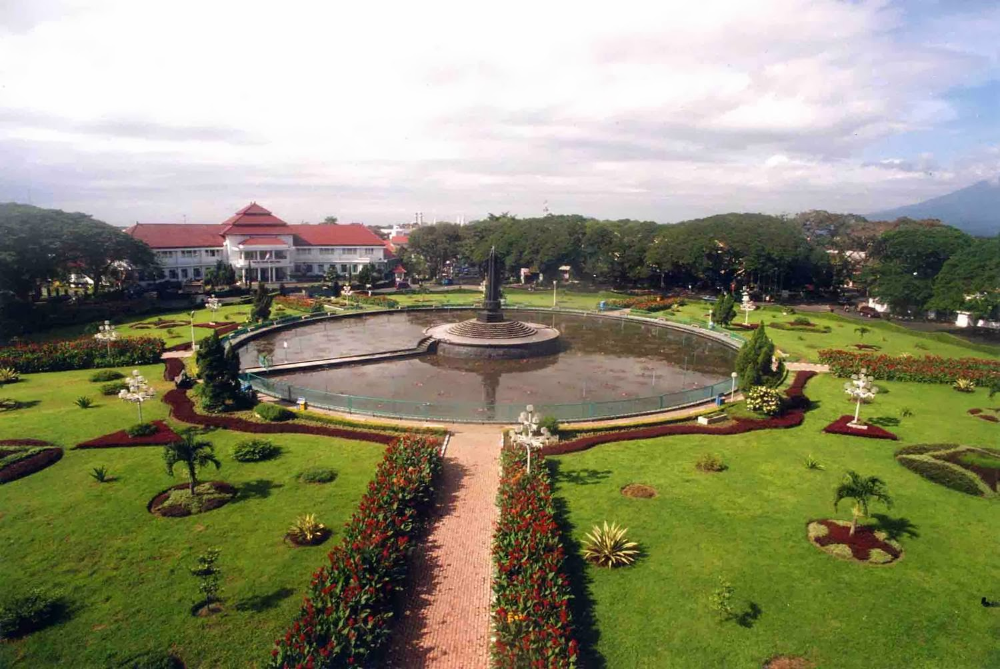

Brief Description of Malang City
Malang is a city in the Indonesian province of East Java. It has a history dating back to the age of Singhasari Kingdom. It is the second most populous city in the province, with a population of 887,443 according to the 2016 estimation. Its metro area is home to 3,663,691 inhabitants spread across two cities and 22 districts (21 in Malang Regency and one in Pasuruan Regency). Malang is the third largest city by economy in East Java, after Surabaya and Kediri, with an estimated 2016 GDP at Rp44.30 trillion.
The city is well known for its mild climate. During Dutch colonization, it was a popular destination for European residents. Until now, Malang still holds its position as a popular destination for international tourists. Malang keeps various historical relics. This city keeps relics of the Kingdom of Kanjuruhan period until the Dutch period. Dutch heritage in general in the form of ancient buildings such as the Kayutangan church and Ijen cathedral which has gothic architecture. Malang also held various events to preserve its cultural heritage, one of them is the Malang Tempo Doeloe Festival. Malang also has a lot of historical heritage which has become a landmark like Tugu Malang (Alun-alun Bundar). Malang is also well known because it is labeled as an educational city. This city has one of the best universities in Indonesia such as Brawijaya University and Malang State University.
Malang has various ethnic groups and cultures from all over Indonesia and the World. The population of Malang reaches 895,387 people with a majority of Javanese, followed by the Madurese and Chinese or Peranakan. Malang metropoitan area or notable known as Malang Raya, is the second largest metropolitan area in East Java after Gerbangkertosusila (Surabaya Metropolitan Area). From Javanese culture point of view, the majority of Malang people belongs to culture of Arekan Javanese.